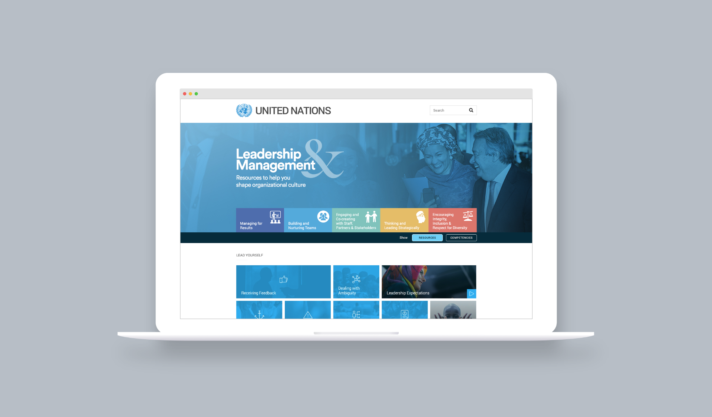
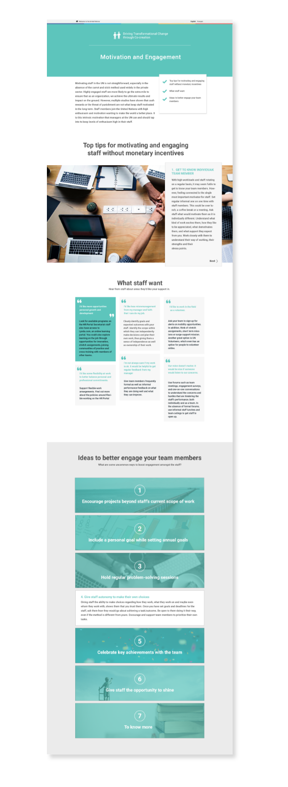

introduction

The Blue Line
Leadership Hub
Role UX/UI Design Team DMSPC Cross-Cutting Innovation and Tecnology Year 2018-2019
SUMMARY
I helped to create a leadership hub that serves a simpler and less forcing way of learning leadership and management skills.
KEY CHALLENGES
Multi Entity Stakeholder,
Minimum Viable Product,
Content Consistentcy and Engagement
DESIGN PROBLEM
How can we improve the experience in gaining leadership skill to support performance at the point of need?
In “Shifting the management paradigm in the United Nations: ensuring a better future for all,” the Secretary-General has indicated that the Organization’s culture and leadership have become increasingly centralized, bureaucratic, and risk-averse—and that critical to our success—is the profound transformation of our culture and leadership.
Secretary-General António Guterres said that “Leadership and management development programmes (…) will be adjusted to reflect the leadership framework and will be more closely aligned with organizational expectations and performance management.” He has stressed that the leadership of the Organization must be strengthened and empowered and has instructed the implementation of the United Nations System Leadership Framework (UNSLF) to be integrated into leadership and management development programmes.
OUR SOLUTION
An internal digital platform that embodies consistent and engaging contents from all UN entities.
This was a massive undertaking while it was a tremendous opportunity for the United Nations to strengthen internal leadership development across the system and shaping an organizational culture of trust, accountability, inclusion, and diversity.
We started by digging deep to understand the organization and staffs. With the research, we aligned organizational needs with user needs and pain points. We created interactive prototypes to get buy-ins with key stakeholders and made it a collaborative project between the UN Secretariat Department of Management Strategy, Policy and Compliance and the UN System Staff College (UNSSC). In line with breaking down silos, this project will continue to expand to include all UN common system entities.
📋
PROJECT PROCESS
This is a long term project that plans to implement in the whole UN system.
Phase 1
Collecting and understanding
- organizational needs and requirements
- staff(user) needs and paint points
Phase 2
Restructure and categorize current system leadership framework and building a Foundational Web Platform.
Phase 3
Improving to launch a minimum viable product with the vision to expand to other entities and content contributors.
🔎
PHASE 1 - Research
Envision a portal for knowledge sharing and collaboration that builds a stronger bond over time.
The staff
To address the current challenges in the management culture and leadership, we conducted focus groups and a survey in 2018. 116 respondents across UN entities in offices away from headquarters (OAHs), the field, and at headquarters helped identify 30 key concerns and pain points, which informs the content strategy on this Leadership Hub.

The organization
We created a Management and Leadership Competency Framework by drawing from the eight leadership principles and four ways of working outlined in the United Nations System Learning Framework, as well as the ninth leadership principle given by the Secretary-General. The framework transforms these principles from aspirational goals into measurable behaviours that can be observed, evaluated and developed.
The outcome
With the researches we defined topics needed to address staff pain points and sort it into the 5 categories of the Leadership and Management Competencies.
🖥
PHASE 2 - Foundational Web Platform
Build a strong foundation for our massive proposition
Vision, Feasability, and Reality
To have a clear understanding of how much of our vision can be achieved within the current resources and supports, we approached the UN OICT team and possible venders for feasibility exploration. This helped us to ensure that our initial launch product will be possible but also useful and lovable.
What does the user think
After building a few pages, we sent a survey to ask the previous user research participants to test the overall usability and the content of the page. The survey included multiple choice questions, suggestion comment boxes, and semantic differential scale with 7 options between “easy” to “not at all”. Conclusion: Content is too long to keep users concentrate.

Portal sustainability and user behaviors
This is a static website! And a limited amount of content will be hosted there. It’s all good content, but a question arose, “How likely will users return to this website?”
During a meeting, I asked everyone to pull out their phone and name all the apps they use regularly. Other than communication, transportation, and banking apps (mail, text, map, Uber etc. ) the commonly used apps are all those that they know there will be new contents.
🚀
PHASE 3 - Launching MVP and expansion
Life is full of surprises, projects too.
Rapid problem solving
We have lost out developer and formed a new vision for the platform. We cannot prevent unexpected limitations and events, but we can quickly react and problem solve with a feasible solution.
Outcome
“I loved it” and “I never see something like this in the System.” We are also being reached out from other teams that are looking for platform similar to this.

🎓
LEARNINGS
Empower organization-first thinking with user-first thinking
To build a learning platform, it was critical to work with the organizational deliverable needs and user needs. We vision the project to have multiple entities involved, but each entity’s annual deliverables are not publicly shared. Through a series of reaching out to different departments, we not only informed them about the project, but also better aligned organizational needs with user needs.
React to unexpected limitations and sudden events
Things does not always go how we planned, but problem does not have to be solved in one single way too. Communication and flexibility are the key to problem solving. I learned to rapid problem solve in and have quick turnarounds in sudden situations.